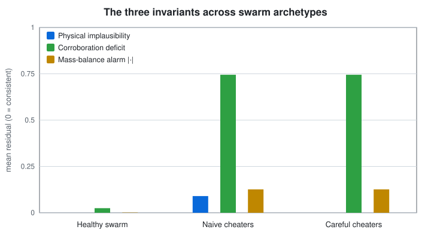
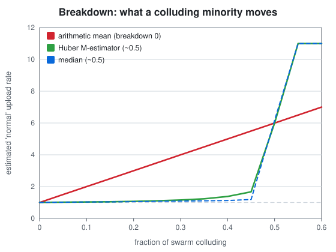
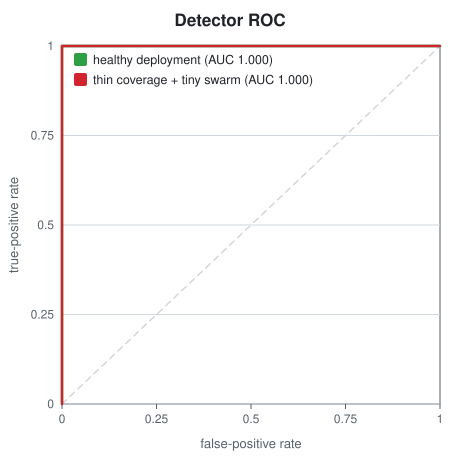
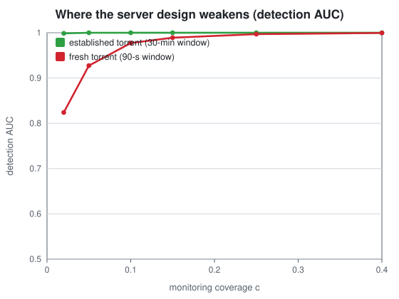
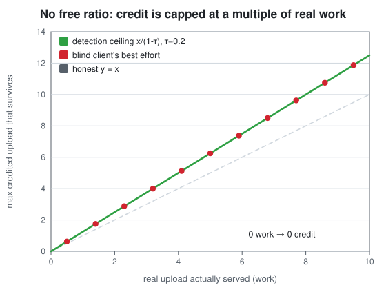

We built the most careful ratio client we knew how to build — then proved, inside its own repository, that even a perfect client optimises the wrong variable. This is that story, in two short papers and five figures.
How it started
The question was blunt: what actually protects a private tracker? Not the folklore, not the fear of getting caught — the real machinery. It's a fair thing to want to know when you've spent a long time building a client that reports whatever upload figure you tell it to.
The honest answer turned out to be more interesting than a list of tricks. A mature tracker doesn't trust your number. It reconciles it — against physics, against the swarm's books, against what its own peers actually received. And once you write that reconciliation down as maths, something falls out that no amount of client polish can undo.
So instead of a cat-and-mouse manual, we did the opposite: we turned Seedforger's own project into an object of study, and shipped the proof that the client side is a game you can't win — right next to the client.
Act I · Paper 1
Everything the tracker needs, it already has. Three checks do most of the work — and none of them requires trusting your number.
You can't upload faster than your uplink. A claim that implies impossible speed refutes itself.
Every byte someone downloaded, someone uploaded. Fabricated upload has no matching download — the swarm's books stop balancing.
Trackers run their own peers. Whatever you really upload, some of them receive. Claim a lot they saw none of, and the gap is the tell.

Act II · the estimator
The naive build — "flag anyone above a cutoff" — dies on real, dirty data: NAT, buggy clients, asymmetric seedboxes. The right object is a robust estimate of what normal looks like, and its breakdown point — the fraction of colluding liars needed to corrupt it — is the number that matters.

Score every peer against that robust baseline, sweep the threshold, and you get a ROC curve. In a healthy deployment the separation is essentially complete.

Act III · the honest part
A detector paper that only reports its wins is marketing. The corroboration measurement is a sample, so its noise grows when there's little to sample. Two things make that bite: almost no monitoring peers, and a brand-new torrent with barely any volume yet.

Act IV · Paper 2 · the twist
Here's the uncomfortable structure of a well-run tracker: the score it credits you is computed partly from what its monitors witnessed — a signal you can neither read nor forge, because forging it would mean actually delivering the bytes. Which is just… seeding.
Do some genuine work w, then inflate. The tracker witnesses a fraction of your real work and flags you when the gap is too big. Work the arithmetic and a wall appears: the most you can declare without a flag is w ⁄ (1 − τ) — a fixed multiple of real work. Nothing on the client moves it.

This is the shape of an incentive-compatible mechanism: telling the truth is optimal not by anyone's goodwill, but by the geometry of who can see what. The tracker didn't out-code the client. It arranged the information so the client is grading its own homework, blind.
The coda
The engineering conclusion isn't despair — it's redirection. The only lever that moves the ceiling is w: real upload, actually served. Which is why Seedforger's most valuable component is the one that isn't about faking anything at all — the real, hash-verified peer-wire engine that genuinely seeds.
# from the repository root dotnet run --project src/Seedforger.Integrity.Figures -c Release -- docs/papers/figures dotnet test tests/Seedforger.Tests
The two papers are defensive and theoretical. They describe how a tracker protects itself and prove a limit on the client side — nothing here is an evasion recipe. The point is exactly the opposite: the durable engineering lives on the honest-seeding side.